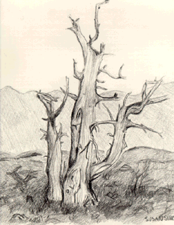

Student Project
Susan

The Bristle Cone Pine, or Pinus Aristata, is one of the oldest living things on the planet. These trees are characterized by their gnarled twisting branches and their dead appearance. The dead looking bristlecones aren't close to dead though. If all of the tree dies except for one branch, the tree will go on living. This shows their amazing tenacity for life. These interesting trees are located in the Great Basin National Park, located in Ely, Nevada.
-Susan
c. Susan
ALbert Lowry High School
Winnemucca, Nevada USA
Pencil on Paper 9 "X12"
Bristlecone Pine
Latin Name: Pinus Aristata
Age: 4,600 years
Circumference: TBA
Location: Great Basin National Park
Ely, Nevada
 Return to Main Page
Return to Main Page
June Julian jj68@nyu.edu